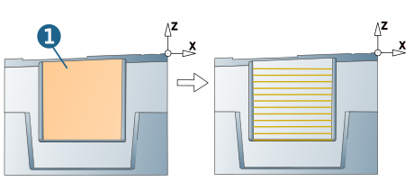
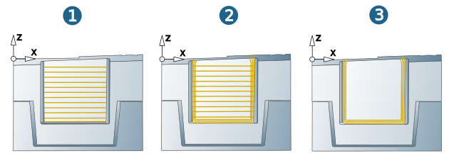
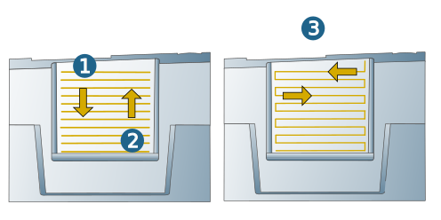
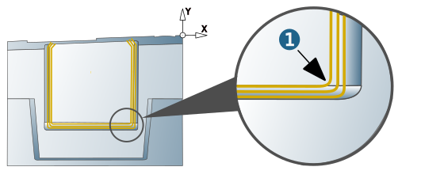
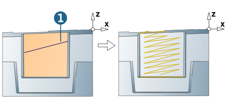

Strategy
Geometry
Surfaces: Select planar surfaces to be machined (1).
|  |
Strategy
Filling only: Machining of the selected surfaces.
Filling and bounding: Machining of the selected surfaces and their edge boundaries.
Bounding only: Machining of the edge boundaries of the selected surfaces.
Note
The options Filling and bounding and Bounding only are only available if the tool used has a Ball tip.
|  |
Filling setup
Infeed mode
Downward: Machining takes place from top to bottom (1)
Up: Machining takes place from bottom to top (2).
Allow zigzag: Machining occurs with alternating orientation (3).
|  |
Bounding setup
Fillet bottom corners: Machining of bottom corners takes place with the specified fillet radius.
Fillet radius: Fillet radius for machining corners.
|  |
Filling orientation
Manual orientation: By default, the orientation of the toolpath follows the Iso orientation of the selected surface. To change the orientation of the toolpaths, enable the Manual orientation option and choose Select line (1).
|  |